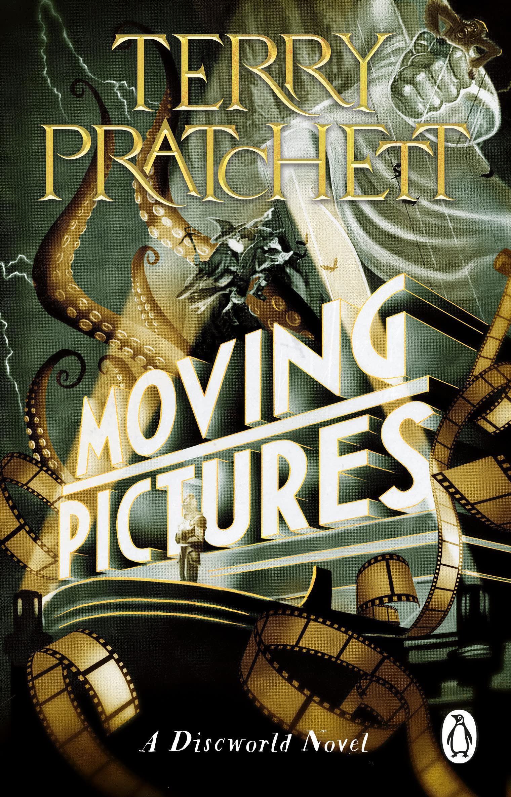
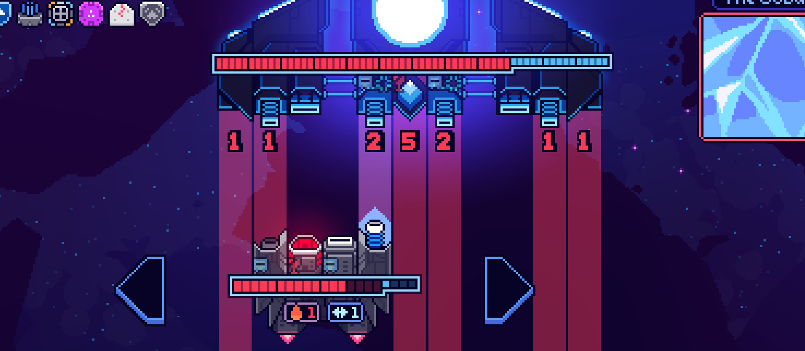

TTRPGS

I adore TTRPGs, and theory craft settings or add-ons for them in my free time.
One such setting is Panoram listed in my projects page. This is a setting I plan to run for friends using the Sentiment TTRPG system about being Fictional characters pulled out of their own worlds and into a strange city.
Reading
I'm a very avid reader, and am currently going through the Discworld series! Love the Guards sub-series, and am working my way through the Unseen University sub-series. The first few were pretty middling, but I've been reading through Moving Pictures and it's really intriguing!
Gaming
I love playing video games, especially Indie titles. And when I have a lot of free time, I try to 100% a few off my library. Currently I've 100%'d Cobalt Core, a wonderful Cardgame Rougelite, and Lunar-Lux, an ok game that had a lot of promise, but seeemed a bit lacking in consistancy.
Overall you'll find me playing Cardgames, anything Final Fantasy, indie gems, and Monster Hunter!